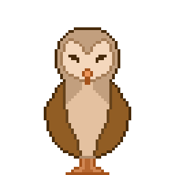
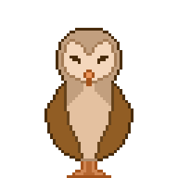

"Witching Hour" é um jogo em desenvolvimento pela equipe "MMLL" para seu projeto de graduação na FATEC Jogos Digitais (2020-2023).
Acompanhe a história de uma jovem bruxa, fugindo dos caçadores que a encontraram em sua casa, enquanto vai em busca de uma cidade segura para ela e seu companheiro de magia. Visite diferentes locais e converse com os residentes da vila para descobrir o que aconteceu nesse vilarejo, junto com seu familiar, e encontre os resquícios da civilização de bruxas que costumava viver aqui, antes da caçada. Inspirado em jogos de RPG, como Stardew Valley, reconstrua sua vida e aprenda feitiços para evoluir em sua jornada de magia e mistério.
 


O jogo é destinado a aqueles que se interessam por temáticas de fantasia, relacionadas principalmente ao período das bruxas medievais, apresentado em uma história interativa em um mundo rico de NPCs e combate. Pela apresentação da temática, a faixa etária recomendada é de +10. Se trata de um RPG de Fantasia e Aventura. Inspirado em jogos como Stardew Valley, em estilo top-down, e Pokémon Mystery Dungeon, com suas batalhas em turno.
O contexto vivido pela personagem se dá em um mundo turbulento, onde as bruxas foram acusadas pelo rei de tramarem contra seu governo. Antigamente, era um reino onde a magia era praticada livremente, havia um consenso entre o Conselho dos Bruxos e o Conselho do Reino. Vários vilarejos tradicionais abrigavam e atendiam de braços abertos as bruxas, que viviam em comunidades nas florestas nos arredores do reino. Após uma série de acontecimentos estranhos, um rumor surge acusando as bruxas de amaldiçoarem o reino, e este espalhou rapidamente. Jogando com a personagem principal, nos encontramos em um vilarejo tentando recomeçar a nossa vida.